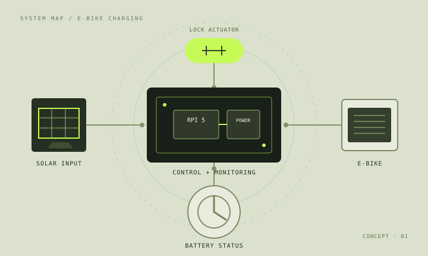

PROJECT 01IN PROGRESS · UGA IEEE
Solar e-bike charger
& lock mechanism
A team project developing an automated charging and locking concept around a Raspberry Pi 5, solar power, and a custom mechanical design.
- Exploring bike recognition, charging control, and battery monitoring as coordinated system functions.
- Integrating AC-to-DC power conversion with embedded power control for charging and live status monitoring.
- Designing a motor-driven lock in CAD, with I²C communication for remote access.